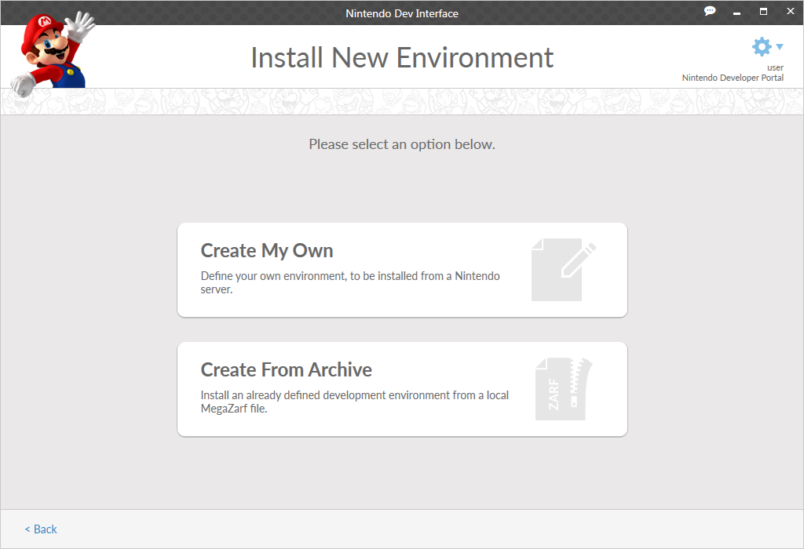

While there is at least one environment on your system, the 3.1.3 Dev Environments Screen screen is displayed. This screen displays information on currently installed environments and allows you to update packages already installed to those environments.
The Development Environments screen allows you to create, update, modify, and delete environments. An environment is the location on your machine where NDI install files to. You may have more than one environment on your PC, each with a different set of packages.
When no environments are present on your system (as is the case the when you first install NDI), instead of the Development Environments screen, you will be taken directly to the Install New Environment screen, as shown below.

The options available from this screen are as follows.
CONFIDENTIAL